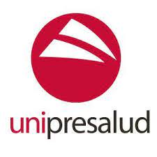
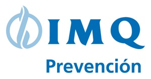
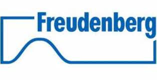
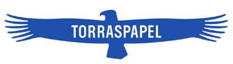
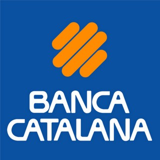

Bugaderia Solidaria
Fundació Roure
Cap de projecte
Responsable de la gestió d'una bugaderia semi-industrial amb tots els seus ambits de gestió.
Oferint servei a empreses privades, provinents del sector hoteler i residències universitàries,
d’aquesta manera les empreses treballen la Responsabilitat Social Corporativa, ja que treballem amb
la integració sociolaboral de persones en situació de fragilitat o nouvingudes i persones que
realitzent treball en benefici de la comunitat.
fundacioroure.org
Aprop
Suport al client
Suport al client en la implementació de diferents marketplaces per el petit comerç a diferents
municipis de la província de Barcelona i Tarragona.
aprop.online
Deserv Sugest, S.L.L.
Project Manager
• Responsable directa de clients en el sector de la prevenció de riscos laborals.
• Confecció de pressupostos de projectes i el seu seguiment.
• Definició de les necessitats del client per a la creació d'aplicacions segons les seves
necessitats. Gestor Documental i Coordinació d'Activitats Empresarials.
• Col·laboració directa amb l’equip de desenvolupament per dur a terme el projecte.
• Suport pre-venda i post-venda de l’eina distribuïda per l’empresa.


Moveotech, S.A.
Project Manager
• Responsabilitat directa de clients en el sector de la prevenció de riscos laborals.
• Confecció de pressupostos de projectes i el seu seguiment.
• Definició de les necessitats del client per la creació de aplicacions segons les seves
necessitats. Gestor Documental i Coordinació d'Activitats Empresarials
• Col·laboració directa amb l’equip de desenvolupament per dur a terme el projecte.
• Suport pre-venda i pots-venda de l’eina distribuïda per l’empresa.
Altran CIS - Norma Consulting
Gerent d'Unitat de Negoci
• Coordinació d’un equip de 24 persones.
• Gestió de clients.
• Responsable directa en clients de grans comptes en diversos sectors d’activitat.
• Responsable de la selecció de l’equip per a la incorporació en els diferents projectes dels
comptes dels meus clients assignats.
• Confecció de pressupostos de facturació i seguiment dels projectes.
• Confecció del dossier mensual de situació per reportar al grup.
• Acció comercial per la generació de nou negoci.
Responsable de la Informàtica de l'empresa (fins la fusió de les empreses del grup Altran,
2006):
• Definició i gestió de xarxes en Windows NT/2000.
• Interlocutor amb les operadores de comunicacions per ús intern i amb les comunicacions dels clients
per oferir un servei de teletreball.
• Responsable de compres del material tècnic.
Norma Consulting
Consultor Tècnic i Analista en SAP R/3
Consultor tècnic en l'entorn de desenvolupament de SAP i R/3, participant en projectes d'implantació
i manteniment de diferents mòduls d’aquest ERP (FI, CO, PA, AM, TR, SD, MM, PM, WM, PP) i BW.
• Coordinació i gestió d'equips de desenvolupament para cobrir las necessitats dels entorns
funcionals del ERP.
• Disseny i coordinació en la elaboració de desenvolupaments a mida, para complementar necessitats
no cobertes por los diferents mòduls de SAP.
• Suport a equips de sistemes en l'aplicació de “parches” i en la gestió dels transports d’aquests
entre els diferents entorns de treball.
• Tasques de formació de l’entorno de desenvolupament, ABAP IV, tant a nivell intern de la companyia
como en la formació d’aquesta eina els clientes.
Responsable de la Informàtica de la empresa:
• Definició i gestió de xarxes en Windows 3.11 i Windows NT/2000.
• Interlocutor con las operadores de comunicacions per ús intern i amb les comunicacions dels clients
per oferir un servei de teletreball.
• Responsable de compres del material tècnic.

Norma Consulting
Analista Orgànic / Analista Programador
Tasques d’anàlisi i disseny de desenvolupaments, test, gestió de la posada en marxa i gestió de les
incidències de manteniment evolutiu i correctiu en aplicacions en els diferents departaments de la
companyia.
Entorn host.

O.Dati Española / Sligos (actual Atos)
Analista i Programador
Tasques de disseny de desenvolupaments, test, posada en marxa i manteniment
evolutiu i correctiu en aplicacions en el entorn financer (tresoreria, gestió de crèdits, etc.) i
logístic.
Entorn host.
